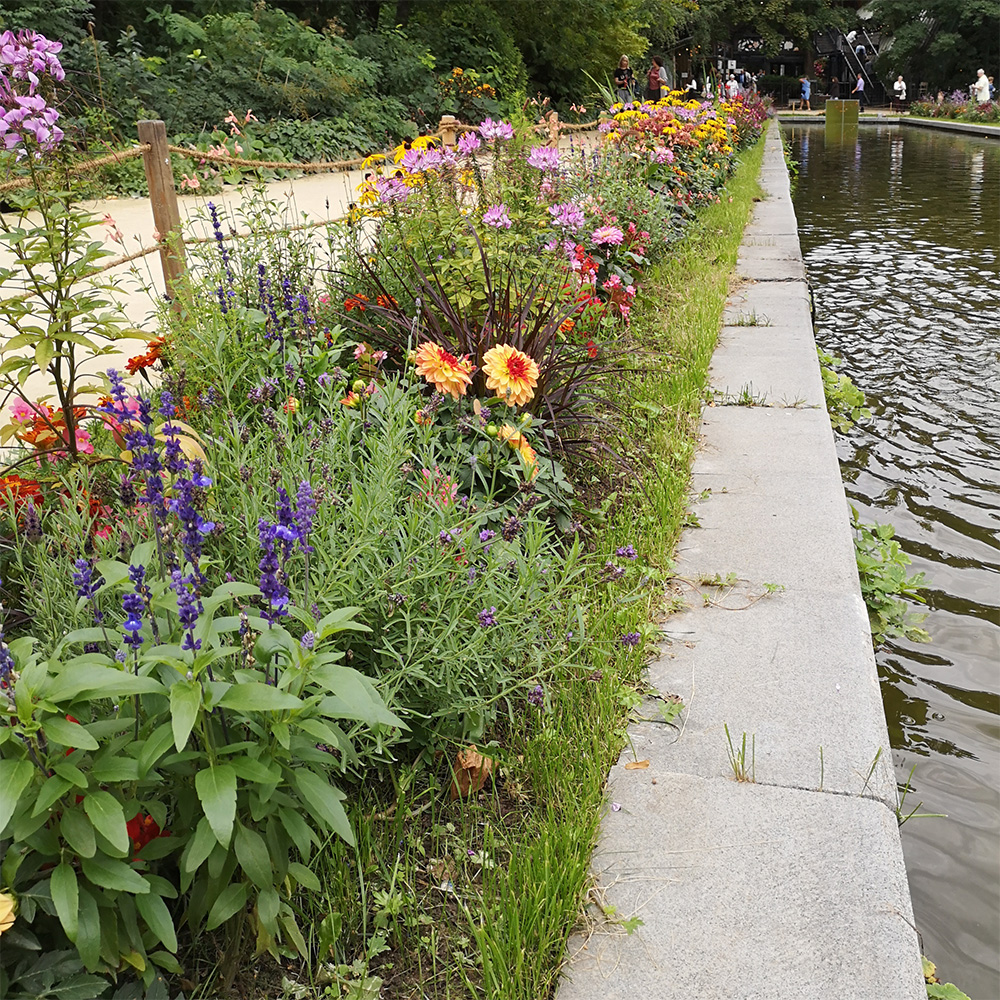
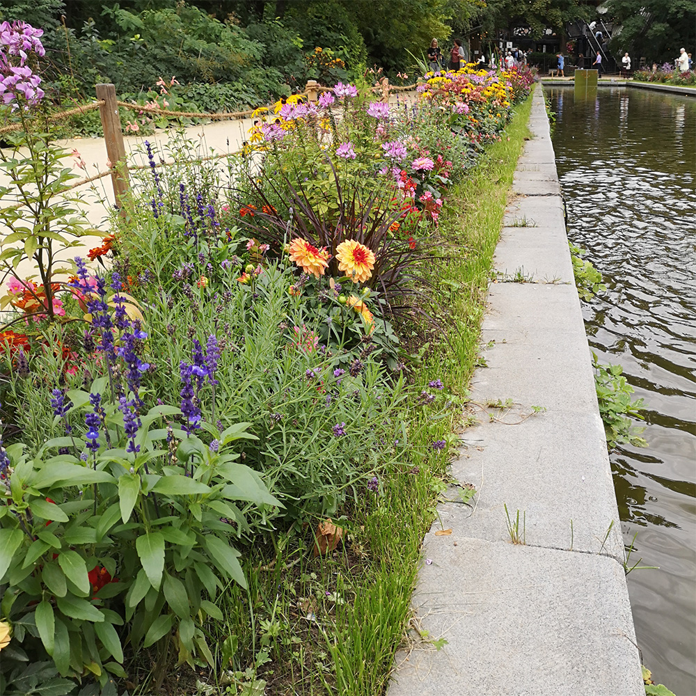

Там, где живет вдохновение
Поход на все эти чудесные мероприятия не может обойтись без фото всего, что зацепило глаз. Зафиксировать момент, чтобы к нему вернуться через некоторое время. Рассмотреть еще раз, отметить новые детали и начать воплощать в жизнь появившуюся на основе этого идею. Иногда впечатления настолько сильны, что готовая работа возникает перед глазами в процессе созерцания произведения, композиции или объекта.


Ярмарки, контрастные и колоритные мероприятия, которые собирают интересных талантливых людей с различным видением мира и предмета. Глядя на все это, можно получить толчок для развития в новом для себя направлении. А кто-то вообще открывает в себе способности к занятию рукоделием.

Ярмарка, это удивительное, яркое, эмоциональное и всегда живое событие. А вы обращали внимание, как мастер передает вам в руки свое творение? С какой нежной грустью в глазах расстается с ним? Ведь он отдает вам частичку себя. От этого ваша покупка становится еще ценнее. Обязательно приглядитесь.
Когда занимаешься чем-то одним, то в какой-то момент это начинает становится скучным. Поэтому нужен всплеск эмоций. Некий мозговой штурм или на оборот разрядка. Музей один из вариантов.
Можно ли наблюдая за полотнами великих художников или изваяния скульпторов вдохновиться на что-то новое? Несомненно! Кроме того, это прекрасно отвлекает от появляющейся монотонности и скуки в своих работах.
Здесь отчетливо начинаешь слышать, как мысли в голове перешептываются и совещаются между собой. Может поэтому люди, гуляющие в одиночку среди картин и скульптур так странно оглядываются.
Музей изобразительных искусств им А. С. Пушкина для меня стал настоящей кладовой идей. Шедевры живописи, скульптуры, прикладного искусства и искусство Древнего мира.
Чего только стоят египетские украшения. При одном взгляде на них хочется примерить и восхищатся. А ведь это просто цилиндрики, колечки, бусинки овальной и круглой формы выточенные из сердолика, бирюзы, лазурита, кварца, полевого шпата или же отлитые из стекла. Кстати стекло в то время, как и золото, было достаточно дорогим материалом. И украшения с ним могли позволить себе только весьма состоятельные люди и царственные особы.
Любуешься этими вещами вглядываясь в каждый элемент рисунка или резьбы и в какой то момент «загорается лампочка», невольно начинаешь улыбаться, потому что родилась еще одна идея.
Третьяковская галерея или новая Третьяковка? В любом случае и там и там вы получите заряд эмоций, море вдохновения и идей.
Меня очень впечатлил реалистичный «Портрет княгини М. В. Воронцовой» кисти Сергея Зарянко. Оказывается, особенностью художника была фотографическая точность. Цвет кожи, черты лица, глаза, линия плеч, кисти рук, складки на платье, рисунок на кружеве, все это вызывает неподдельное восхищение.
Картина Александры Экслер «Венеция». Это невероятное панно или даже пазл, сложенный из геометрии, цвета и света. Вот где можно почерпнуть идеи или просто отдохнуть, размышляя над той же геометрией.
Картины Айвазовского приводят в восторг реалистичностью, но в то же время вызывают тревогу. Но в эти полотна хочется вглядываться.
Одно дело, когда мы видим репродукции в учебниках школьной программы или же в тематической литературе с описанием сюжета известного искусствоведа или критика. И совсем другое дело увидеть полотно в оригинале. Поразится размерам картины, испытать эмоции не просто Вау!, а нечто большее. Рассмотреть самые мелкие детали и заметить персонажей, которые словно теряются на страницах печатных изданий.
Эмоции, чувства, впечатления, переживания, идеи, вдохновение — вот что может дать музей или картинная галерея.
В Аптекарском огороде нужно провести целый день, чтобы вдоволь насладиться разнообразием цвета, формы и размера, поразмышлять над идеями и вдохновиться новыми. Полюбоваться цветением лилий и лилейников, гайллардий и бегоний. Умудриться рассмотреть нежно-розовые цветки василистника Делавая размером с горошинку, влюбиться во вранцузский цветник и поздороваться со шмелем.
 


Прогуляться среди множества представителей хвойных, вдохнуть их необыкновенно свежий аромат и потеряться в пятидесяти оттенках зеленого. А если хочется оригинальности, то нужно заглянуть в оранжерею с кактусами. Уж они мастера по части необычайно удивительных форм и размеров.


Посещение зоопарка или аквариума, это как заглянуть в мега шпаргалку - формы, рисунки, цвет и цветовое сочетание, шерсть, перья, чешуйки...


Природа создала все это великолепие не просто так. Для зверя или птицы это способ для нормального существовать в своей нише. А для человека это прежде всего пища для глаз: контрастный рисунок шерсти леопарда и тигра, монохромные зебры, панды, пингвины, глаза на крыльях бабочек или перьях павлина, а сколько цветов, оттенков и форм на коралловом рифе. И все это всегда находится в постоянном движении.